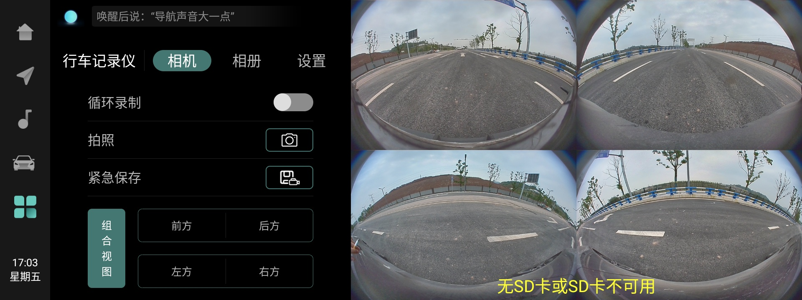

Функция кругового видеорегистратора (DVR) выполняет роль автомобильного «черного ящика». Основное назначение — использование 4 камер системы кругового обзора AVM по периметру автомобиля для записи внешних видеосигналов и сигналов состояния автомобиля во время движения, что обеспечивает доказательную базу при ДТП. Видеорегистратор DVR собирает видеоинформацию вокруг автомобиля в режиме реального времени через камеры и передает данные по шине CAN блокам BDC, EPBI, EPS и др., обеспечивая сохранение данных о режиме движения автомобиля и соответствующей видеоинформации. Кроме того, система обладает функциями фотосъемки, отображения в реальном времени и воспроизведения.
